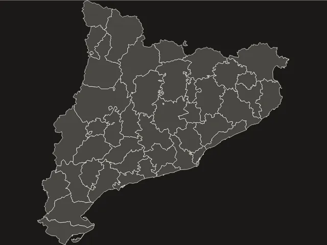
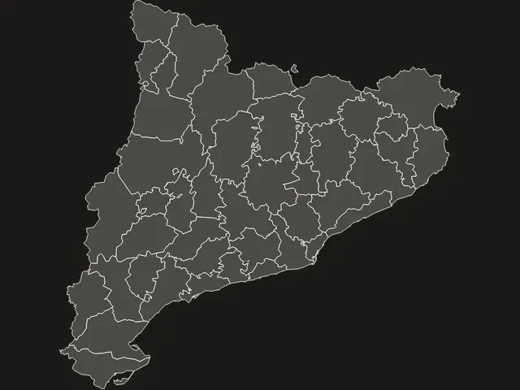
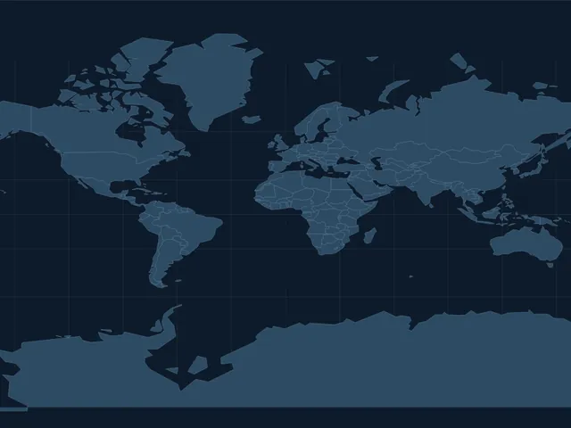
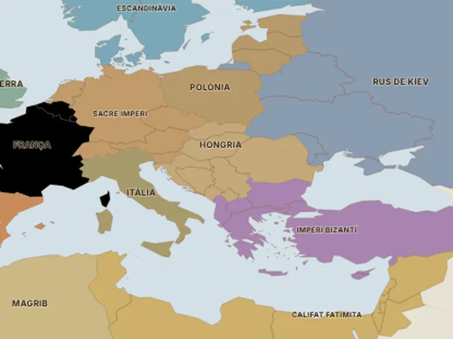
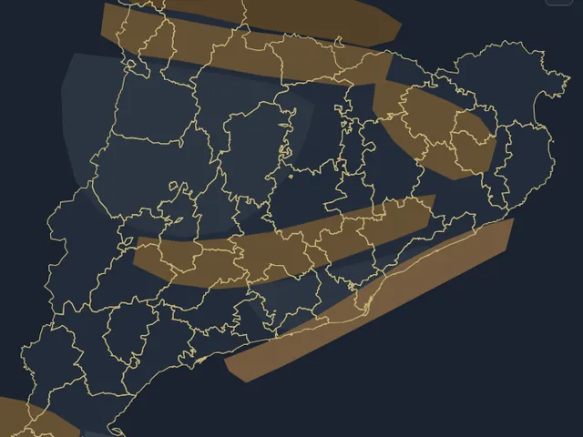
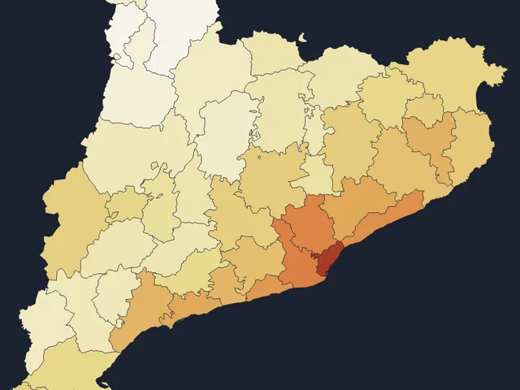

Recursos didàctics
6 disponiblesJocs i materials interactius per aprendre geografia jugant. Pensats per a l'aula, però oberts a tothom.

Joc · Geografia de Catalunya
Joc de les comarques
Troba les 43 comarques al mapa contra rellotge. Cada error compta!

Joc · Geografia de Catalunya
Joc dels municipis
Tria una comarca i troba-hi tots els municipis. 947 municipis en total!

Eina didàctica · Lectura crítica
Comparador de projeccions
Mercator, Gall-Peters, Robinson... Descobreix com cada mapa deforma el món. Cap mapa és neutre!

Eina didàctica · Història i territori
El full transparent
Superposa l'Europa de l'any 1000 amb les fronteres d'avui. Què ha canviat i què perdura?

Eina didàctica · Geografia física
Fronteres al mapa, al territori
Segueixen els límits comarcals el relleu i els rius de Catalunya? Activa les capes i descobreix-ho.

Eina didàctica · Geografia humana
On viu la gent, i per què
Mapa de densitat de població de Catalunya. Per què uns llocs s'omplen i d'altres es buiden?